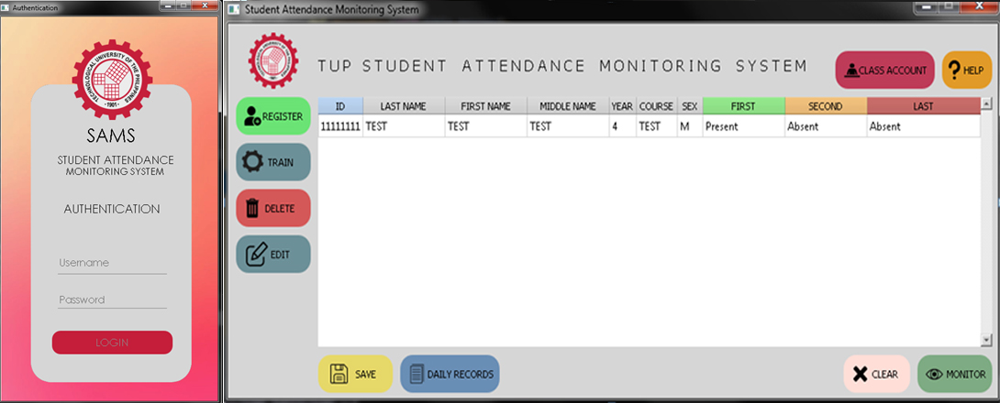

SUMMARY
The Student’s Attendance Monitoring System using Image Processing is an application designed to track and record the attendance of the students inside the classroom. When operating with the use of camera and detects a face of a student, it sends data and identifies if the student is present or not and sets of a certain amount of time and intervals, if the student remains unstable to the scanning process per range, the student will mark as absent. Proper seating and posture of a face in the perspective of the camera affects the recognition for they verify the student attendance.